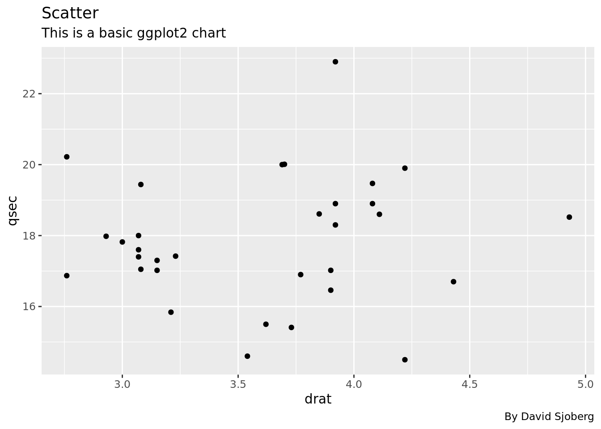
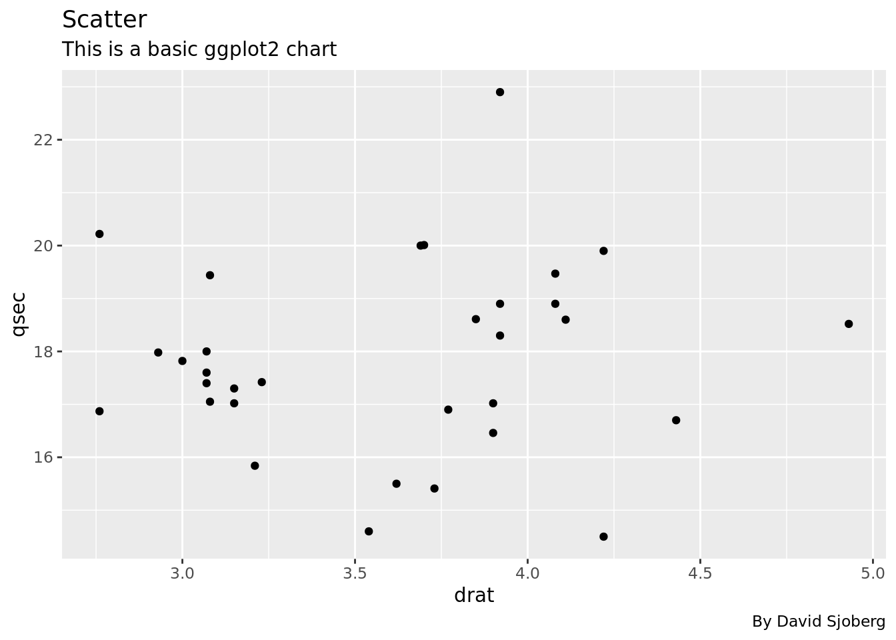

Code
ggplot(df, aes(drat, qsec)) +
geom_point()
In this document some standard ggplot2 plots are replicated in D3.
ggplot(df, aes(drat, qsec)) +
geom_point()
d3 = require("d3@7")
function small_grid(A) {
let middle_pos = []
for (let i = 0; i < (A.length - 1); i++) {
let diff = A[i+1]-A[i]
middle_pos.push(A[i] + diff/2)
}
return middle_pos
}
scatter = {
const data = await d3.json("data/scatter.json")
const xAccessor = d => d.drat
const yAccessor = d => d.qsec
// Dimensions
let dimensions = {
width: width,
height: width / 1.4,
marginTop: width / 40,
marginRight: width / 30,
marginBottom: width / 10,
marginLeft: width / 12
};
dimensions.ctrWidth = dimensions.width - dimensions.marginLeft - dimensions.marginRight
dimensions.ctrHeight = dimensions.height - dimensions.marginTop - dimensions.marginBottom
// Draw Image
const svg = d3.create("svg")
.attr("width", dimensions.width)
.attr("height", dimensions.height)
const ctr = svg.append("g") // <g>
.attr(
"transform",
`translate(${dimensions.marginLeft}, ${dimensions.marginTop})`
)
const xScale = d3.scaleLinear()
.domain(d3.extent(data, xAccessor))
.range([0, dimensions.ctrWidth])
.nice()
const yScale = d3.scaleLinear()
.domain(d3.extent(data, yAccessor))
.range([dimensions.ctrHeight, 0])
.nice()
// Axis
const yAxis = d3.axisLeft(yScale)
.tickSizeOuter(0)
.ticks(4)
const yAxisDOM = ctr.append('g')
.style("font-size", "14px")
.call(yAxis)
.call(g => g.select(".domain").remove())
yAxisDOM.selectAll("text")
.style("font-size", "12px")
.style("color", "grey")
const xAxis = d3.axisBottom(xScale)
.tickSizeOuter(0)
.ticks(5)
const xAxisDOM = ctr.append('g')
.style(
'transform',
`translateY(${dimensions.ctrHeight}px)`
)
.call(xAxis)
.call(g => g.select(".domain").remove())
xAxisDOM.selectAll("text")
.style("font-size", "12px")
.style("color", "grey")
// Panel
ctr.append("rect")
.attr("width", dimensions.ctrWidth)
.attr("height", dimensions.ctrHeight)
.attr("fill", "#ebebeb");
const xGrid = (g) => g
.style('stroke', 'white')
.style('stroke-width', 1.5)
.selectAll('line')
.data(xScale.ticks(5))
.join('line')
.attr('x1', d => xScale(d))
.attr('x2', d => xScale(d))
.attr('y1', 0)
.attr('y2', dimensions.ctrHeight)
const xGridMinor = (g) => g
.style('stroke', 'white')
.style('stroke-width', .5)
.selectAll('line')
.data(small_grid(xScale.ticks(5)))
.join('line')
.attr('x1', d => xScale(d))
.attr('x2', d => xScale(d))
.attr('y1', 0)
.attr('y2', dimensions.ctrHeight)
const yGrid = (g) => g
.style('stroke', 'white')
.style('stroke-width', 1.5)
.selectAll('line')
.data(yScale.ticks(4))
.join('line')
.attr('y1', d => yScale(d))
.attr('y2', d => yScale(d))
.attr('x1', 0)
.attr('x2', dimensions.ctrWidth)
const yGridMinor = (g) => g
.style('stroke', 'white')
.style('stroke-width', 0.5)
.selectAll('line')
.data(small_grid(yScale.ticks(4)))
.join('line')
.attr('y1', d => yScale(d))
.attr('y2', d => yScale(d))
.attr('x1', 0)
.attr('x2', dimensions.ctrWidth)
ctr.append('g').call(yGrid)
ctr.append('g').call(xGrid)
ctr.append('g').call(xGridMinor)
ctr.append('g').call(yGridMinor)
// Geom layer
ctr.append('g')
.selectAll('circle')
.data(data)
.join('circle')
.attr('cx', d => xScale(xAccessor(d)))
.attr('cy', d => yScale(yAccessor(d)))
.attr('r', 3)
return svg.node();
}